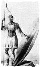

Shaka Zulu (1787-1828) tarihin en önemli Zulu kralları arasında yer almaktadır. Zulular 19. yy’da Avrupa sömürgeciliğine karşı büyük bir direniş sergileyen Afrikalı bir kabile konfederasyonuydu. Kanlı savaşlarla geçen on iki yıllık iktidarı döneminde Shaka, günümüz Güney Afrikası’nın büyük bir bölümüne yayılan geniş bir imparatorluk kurmuştur. Aynı zamanda yüzyılın sonraki dönemlerinde İngiliz istilası ile mücadele edebilecek kadar güçlü bir ordunun temellerini de atmıştır.
Shaka’nın imparatorluğu kurmak için başlattığı savaşlar yüz binlerce insanın ölümüne neden olmuştur. Ancak o yine de bir halk kahramanı olarak anılmaktadır. Bıraktığı miras, günümüzde Güney Afrika’nın en büyük etnik gruplarından biri olan Zulular’ı bir arada tutmaktadır.
Shaka, Zulu şeflerinden birinin oğluydu. Annesi babasından ayrı yaşıyordu. Shaka altı yaşındayken annesiyle birlikte sürgüne gönderilmişti. Babasının 1816 yılındaki ölümünden sonra sürgünden dönerek tahtta hak iddia etti. Rakiplerine karşı ölümcül saldırılar başlattı.

Aynı zamanda komşu kabileleri de kontrol altına almaya çalışıyordu (Zulu yüksek ya da göksel anlamlarına gelmektedir). Onları kendi imparatorluğuna kattı. Ordusunu bu süreçte yeni silahlarla donanmış önemli bir güç haline getirdi. Savaşçılarını birlikler halinde organize ediyor ve onlara savaşçı bir ruh kazandırıyordu.
1828 yılında Shaka’ya üvey kardeşi suikast düzenledi. Böylece Shaka’nın kurduğu imparatorluğu ele geçirmiş oldu. Zulu krallığı 1879 yılına kadar ayakta kaldı. Shaka’nın yeğeni Cetshwayo (1827–1884) İngilizler’e Anglo-Zulu savaşında yenilince imparatorluğun da sonu geldi.
Shaka’nın anısı, ölümünden sonra Güney Afrika’da yaşamaya devam etti. Apartheid döneminde Zulular “Inkatha Özgürlük Partisi”nin çekirdeğini oluşturdular. Zulu, Apartheid karşıtı mücadelede yerli gücünün bir simgesi olarak kullanıldı.
Ek Bilgiler
1- 2008 yılında Grammy ödüllü Güney Afrika müzik grubu Ladysmith Black Mambazo, Kral Zulu için bir albüm çıkardı: “Ilembe: Honoring Shaka Zulu” (Ilembe: Kral Zulu Anısına).
2- 1986 yılında yayınlanan televizyon dizisi “Shaka Zulu”da Güney Afrikalı aktör Henry Cele (1949–2007) Zulu’yu canlandırıyordu.
3- Amerikan yurttaşlık hakları lideri ve Kara Panterler üyesi James Forman (1928–2005) oğluna ünlü kraldan esinlenerek Shaka adını verdi.